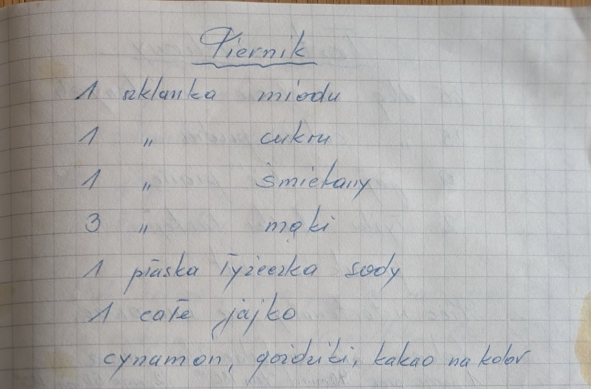

Piernik


Składniki
- 1 szklanka miodu
- 1 szklanka cukru
- 1 szklanka śmietany
- 3 szklanki mąki
- 1 płaska łyżeczka sody
- 1 całe jajko
- cynamon, goździki, kakao na kolor
Przygotowanie
Oryginalny zapis
Piernik 1 szklanka miodu 1 " cukru 1 " śmietany 3 " mąki 1 płaska łyżeczka sody 1 całe jajko cynamon, goździki, kakao na kolor